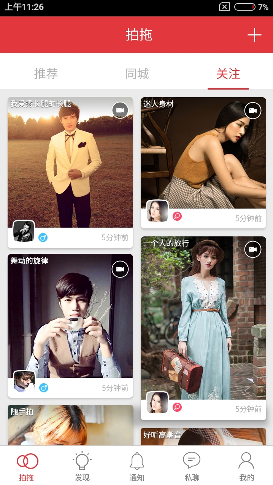
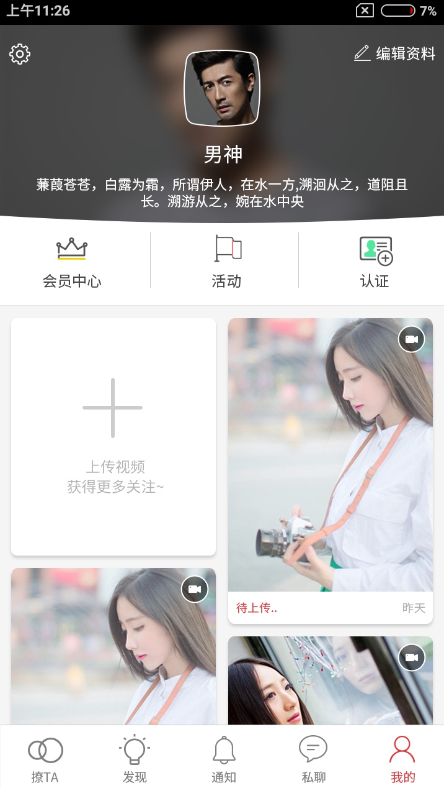
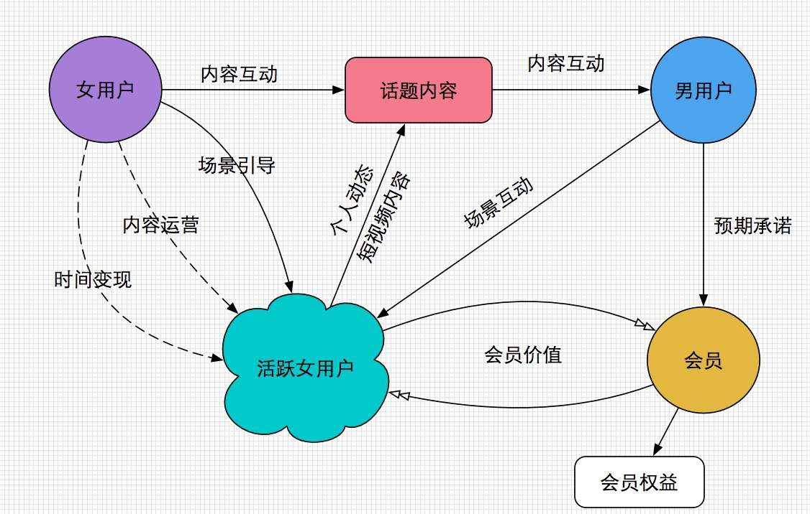
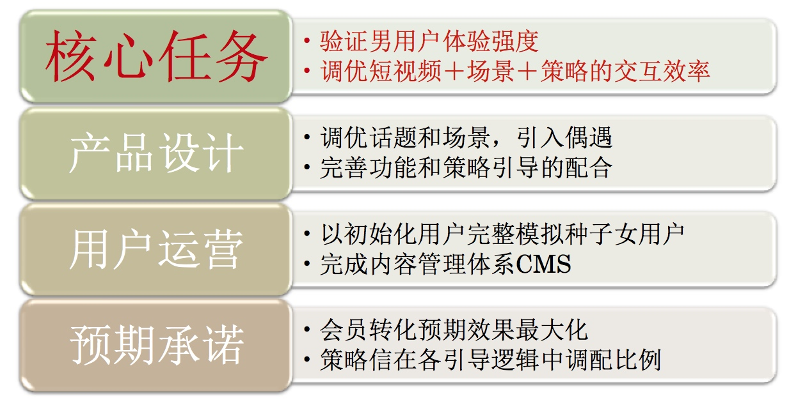
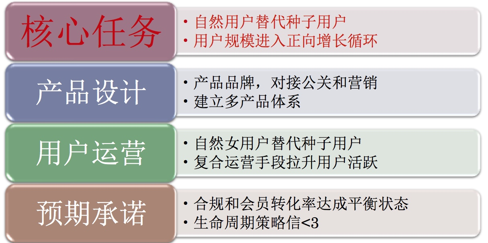
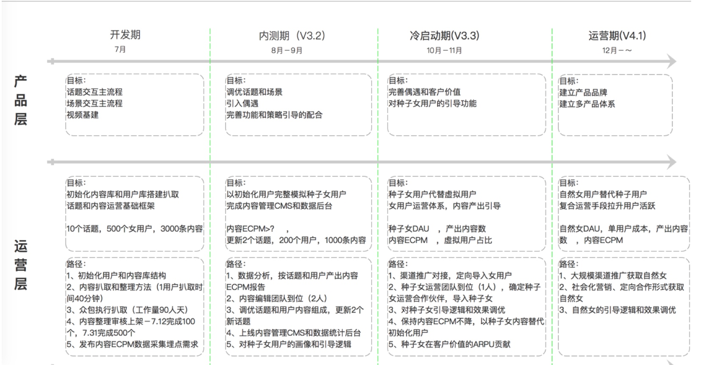

现有业务的几个方面（怎么控制），风险点，备案
业务扩张（平台&多产品），几个点，备案，头是谁
风险点：
适配（严欣），包的大小，支付的相似性
王楠： 傻强用户丢失多
程远炜： 策略强度， arpu值，种子用户承接策略，审核机制和风控 （外包方案）
平台扩展：iOS提前开发，目前在跟进。 微信怎么考虑？ （外包两个技术做开发）
商业化（王楠、思明） 产品 （） 运营（）
多产品： （多产品给代理商）,6个人

营销一部：
1. 现有毛利
2. 广度要够 （业务触角）
3. 重点业务（广点通，中小渠道）
商务三部：
1.新产品
2.官渠
3.大量的中小渠道的空档，如何同商务一部结合
现有业务不担心，市场出现大量空隙的时候，如何填补
进度摘要
本周按计划开发，趣拍自定义sdk延迟到下周交付，和技术沟通过，应该不太会影响开发进度。
周二对全体产品人员宣讲的ppt，主要内容是新产品对公司的意义，产品愿景和四个阶段的任务（详见后续内容）。
用户和内容运营完成了框架设计，下周开始准备初始准备用户的内容。
预期承诺（策略）梳理了详细的文档，以及策略和产品的初期融合工作。
原型UE
tab_首页



tab_发现


tab_通知


tab_私聊

tab_我的

消费者洞察
- 视频已经成为移动运用主流的内容形式
- 碎片化的使用场景需用冲击力强的内容迅速提升用户兴趣 （包装成内容形式的广告投放来佐证）
- 有缘网1.0无法满足优质女性用户需求。
- 有缘网1.0的互动策略真实性饱受质疑，同用户相关性强的互动才能打消用户质疑。
- 有缘网1.0的看资料打招呼的套路落后主流玩法。
项目任务
提供价值：建立沟通的最大可能性（暂以会员二次会话率作为参考指标）
- 开发一款符合新时代特征，具有充分市场竞争力的创新社交产品；
- 在全面提升ROI的同时，能够形成更加良好的线上生态，满足更严格的合规标准。
- 后续以该产品为基础，衍生出覆盖不同需求的多产品体系，并完成品牌升级。
产品定位
是面向中低阶层大众用户，以内容－连接－交互－沟通为主要形式，利用短视频作为主要展现手段，满足用户交友需求。
短视频交友平台
暂定开发产品名称：拍拖(脱)
实现手段
整体系统的设计围绕商业模型和生态模型展开，称为左腿和右腿。
商业模型
通过创新的产品形态、交互形式 + 视频、语音等富媒体内容，对男女用户形成强烈的真实感和乐趣刺激，从而大幅度提升付费转化率和活跃度。
产出：
男性用户 K值
女性用户：K值、新增数量。
生态模型
通过引导女性用户的活跃行为，从而实现会员价值兑现，从而形成良好的线上生态。
输出： 男女用户在线比例，合规标准
路径：会员价值（提升满意度，降低不满意度）、严格合规

消费者旅程

考虑：
- 内容模块作为全新的线，有如下考虑：
- 让系统丰满，更好的承接短视频的内容形式，让用户初期建立短视频交友的印象；
- 内容的丰满让用户的形象更为立体，提升真实感；
- 以内容建立的关系，能解决初次沟通的有效性，后期的互动形成交友预期更好有效开展。
- 视频内容可能会引发分享。
- 毕竟是新的创新，能否匹配用户的交友需求，此处是有疑问的；
- 应用模块的设立主要是秉承有缘网长期的经验，采用批量扫人的模式，低成本的让用户之间建立关系，再通过互动的设计深化关系，以达到转化会员的目的。
用户规则
| 定义 | 用户 | 露出 | 看见谁 | 设计体现 |
|---|---|---|---|---|
| 视频、照片 | 男高 | 全女 | 女高 | --- |
| 都没有 | 男低 | 无 | 女高 | --- |
| 视频、照片 | 女高 | 全男 | 男高 | --- |
| 头像 | 女低 | 会员 | 男高、会员 | --- |
里程碑：

研发期

- 7月30日，V3.2版本发布。
- 6月17日，大部分功能UI设计完成，进入产品开发 （魔法情书UI出来）
- 6月22日，我们约会吧 UI设计完成
- 7月7日，魔法情书开发完成
- 7月12日，完成产品技术开发
- 7月15日，产出α版本
- 7月30日，上线，跟踪关键数据
内测期 （8-9月）

- 短视频 承载形式
- 内容 + 场景 主线
- 有缘网对用户交友需求的洞察
使用准备好的自有用户（500人，5000内容），模拟真实用户行为
重点关注指标：
- 用户的使用时长、激活、注册 等流程数据
- 商业化效率 （arpu7、曝光收益率）
冷启动期 （10-11月）

引入种子女用户，搭建女用户和男用户交互和商业循环，降低模拟种子女用户行为的比例，提高女用户使用体验。
发布Relese 3.3版本，组织可以分为 运营 和 产品 两个方向，运营更多和商业投放结合，产品围绕女性用户行为进行产品迭代。
运营重点关注数据：
- 男用户arpu7
产品重点关注数据：
- 女用户使用时长，留存
- 内容产生的来源
- 引导女用户行为（引导策略），用种子女降低策略比例
运营期（12月--）

正式进入运营期，面向市场投放，搭建生态，逐步退出策略。
重点关注指标：
- 二次会话率
- 曝光转化率


项目进展
- 按计划，本周各主要功能模块UI设计和切图均已完成，下周一进入开发。开发完成时间待周一更新
- 下周重点进行3条策略线和聊天具体规则设计
- 下周开始进行话题确定（10-15个话题名称），话题内容数据抓取和人工抓取
- 几个关键阶段和里程碑设置
视频基础建设，谈妥趣拍SDK事宜。
下周准备在全公司相关人员做一次新产品汇报会，让大家对产品形态有个了解，并能听取相关的意见。
几个考虑的问题
1、 启动内容准备 500个用户，1500视频，格式，大小，视频
先出视频标准，评估工作量
2、 视频处理SDK，免费，还是 付费。 服务器端还是客户端？大小问题？付费方式？
杭州趣拍SDK。
3、内测期后商业化推广准备？渠道谁来承接？
4、微信平台如何做产品承接？
组织考虑
选定严欣作为团队的leader，严欣选定了程远炜和王楠作为副手。王楠负责产品项目安排和用户体验，王楠负责策略层的统一把握。